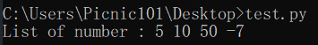
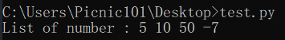

Installation (การติดตั้ง)
ในการติดตั้งภาษา Python นั้น วิธีการคือให้เราเข้าไปที่เว็บไซต์ python.org จากนั้นไปที่หน้า download และเลือกเวอร์ชั่นและระบบปฏิบัติการที่ต้องการ (เนื้อหาในเว็บไซต์นี้จะเป็น Python 3.7.4)

ในตอนติดตั้งนั้นให้เราเลือกช่องที่เขียนไว้ว่า "Add Python 3.7 to PATH" เพื่อที่จะทําให้เราสามารถเรียกใช้ Python ผ่านทาง CMD ของเราได้นั้นเอง
จากนั้นเราสามารถทดสอบได้ว่าเราติดตั้งเรียบร้อยแล้วด้วยการเปิด CMD แล้วพิมพ์คําว่า "py"
ในการรันภาษา Python นั้นเราสามารถรัน Python ได้หลักๆ2วิธีตามนี้เลยครับ
- Interactive Mode คือการที่เราพิมพ์ Code ที่ต้องการจะรันในแต่ละบรรทัดและผลลัพธ์ก็จะออกมาตามแต่ละบรรทัด
- Script Mode คือการที่เรามีไฟล์ .py ที่เป็นโค้ดแล้วนํามารัน
การใช้งาน Interactive Mode ง่ายๆเลยครับเราก็เปิด cmd หรือจะเข้าตัว IDLE ที่มีมาให้หลังจากติดตั้ง Python แล้วก็ได้ครับ


การใช้งาน Script Mode เราสามารถทําได้โดยการเปิด cmd และพิมพ์ "py -3 <ชื่อไฟล์>.py" จากนั้น Python ก็จะนําโค้ดที่อยู่ข้างในไฟล์นั้นมารัน หากเราใช้ IDLE ของ Python ก็สามารถรันได้โดยการกด F5 ครับ

Data Type & Varieble (ชนิดของข้อมูล & ตัวแปร)
ก่อนที่เราจะไปรู้จักกับตัวแปรเราต้องรู้จักกับ ชนิดของข้อมูลใน ภาษา Python กันก่อนครับซึ่งจะมีตามนี้เลย
| Type | Example |
|---|---|
| ตัวอักษรและข้อความ (String) | "Hello world", 'hi', "2019" |
| ตัวเลขจํานวนเต็ม (Integer) | 6, 8, -5, 101, 187 |
| ตัวเลขทศนิยม (Float) | 2.0, 87.1, -5.5 |
| ค่าความจริง (Boolean) | True, False |
| ลิสต์ (List) | [5, 1, "hi", 5.5, True] |
| ดิกชันนารี่ (Dictionary) | {"John": 55, "Bob" : 879} |
| ทูเพิล (Tuple) | (5, 9, 10, 54, 5.1, True) |
| เซ็ท (Set) | {5, 9, 7, 8, True} |
ซึ่งเราสามารถกําหนดค่าตามชนิดข้อมูลข้างต้นนี้ให้กับตัวแปรได้ครับ ยกตัวอย่างเช่น

จากโค้ดข้างบนหมายความว่า
- ตัวแปร name มีค่าเป็นข้อความ(String) ว่า John
- ตัวแปร age มีค่าเป็นจํานวนเต็ม(Int) คือ 5
- ตัวแปร love_tree มีค่าเป็นค่าความจริง(Boolean) คือ True
และเราสามารถเรียกใช้ค่าที่อยู่ข้างในตัวแปรผ่านตัวแปรได้ครับ ยกตัวอย่างเช่น

เรายังสามารถแปลงค่าให้กับตัวแปรได้ด้วย โดยการใช้ Build in function ตามนี้เลยครับ
| ชนิดที่ต้องการจะแปลงให้เป็น | Build in function |
|---|---|
| ตัวเลขจํานวนเต็ม | int() |
| ตัวอักษรและข้อความ | str() |
| ตัวเลขทศนิยม | float() |
ส่วนชนิดของข้อมูลแบบอื่นๆเราจะไปลงรายละเอียดกันในหัวข้อหลังๆนะครับ


เราไม่สามารถแปลงข้อความที่มีตัวอักษรให้เป็น int และ float ได้เพราะจํานวนเต็มและทศนิยมไม่ควรจะมีตัวอักษร ส่งผลให้เกิด ValueError


Input & Output
Input คือการรับข้อมูลเข้ามา และ Output คือการแสดงผลลัพธ์ที่ได้ครับ
- ใน Python การรับ Input จะสามารถทําได้โดยใช้ Build in function ที่ชื่อว่า input() ครับ ซึ่งมันจะรับค่ามาเป็น String ครับ
- ใน Python การแสดงผลลัพธ์ออกมาทางหน้าจอ สามารถทําได้โดยการใช้ Build in function ที่ชื่อว่า print() ครับ
ยกตัวอย่างเช่น


หากเราอยากได้ Input ที่เป็นชนิดตัวแปรอื่นที่ไม่ใช่ String เราก็สามารถใช้ Build in function มาช่วยได้ครับ ยกตัวอย่างเช่น


ในส่วนของ print() เนี่ยมีลูกเล่นเยอะมากๆเลยครับ ผมจะพูดถึงการ print หลายๆตัวแปรหรือค่าหลายๆค่าพร้อมกันก่อนโดยเราสามารถทําได้โดยการใช้ "," ครับ ยกตัวอย่างเช่น
 

จริงๆแล้วยังมี String Format ด้วยครับแต่ในตอนนี้เราจะพูดถึงแค่นี้ก่อนส่วนในเรื่องของ String Format เราจะไปพูดในหัวข้อข้อ String Format ครับ
Operators (ตัวดำเนินการ)
Operators หรือตัวดำเนินการ คือการกระทําการทางคณิตศาสตร์ต่างๆกับข้อมูล ซึ่งในภาษา Python จะมีหลักๆอยู่ด้วยกันตามนี้เลยครับ
| การดําเนินการ | สัญลักษณ์ | หน้าที่ |
|---|---|---|
| Addition | + | การบวก |
| Subtraction | - | การลบ |
| Multiplication | * | การคูณ |
| Division | / | การหาร |
| Floor Division | // | หารแบบตัดเศษ |
| Modulo | % | หารเพื่อเอาเศษ |
| Exponentiation | ** | การยกกําลัง |
ซึ่งตัวดําเนินการพวกนี้มีไว้เพื่อให้เราสามารถ คํานวณทางคณิตศาสตร์ในโปรแกรมของเราได้ครับยกตัวอย่างเช่น


สําหรับ String เราจะขอเก็บไว้พูดในตอนที่เป็นหัวข้อของ String นะครับ
ซึ่งในภาษา Python จะใช้สิ่งที่เรียกกันว่า PEMDAS ครับคือ ลําดับการกําหนดว่าจะทําอะไรก่อนอะไรหลังซึ่งลําดับความสําคัญจะเป็นไปตามนี้เลย
| ลําดับความสําคัญ | การดําเนินการ | ทิศทาง |
|---|---|---|
| 1 | วงเล็บ | ซ้ายไปขวา |
| 2 | ยกกําลัง (**) | ขวาไปซ้าย |
| 3 | คูณ, หาร, หารแบบตัดเศษ, หารเพื่อเอาเศษ (*, /, //, %) | ซ้ายไปขวา |
| 4 | การบวก, การลบ (+, -) | ซ้ายไปขวา |
ยกตัวอย่างเช่น


ลําดับของสมการอันแรกจะเป็นตามนี้ครับ
- 20 ** 2 + (2 * (80 / 5) ** 5) % 5 - 2 + 8
- 20 ** 2 + (2 * 16 ** 5) % 5 - 2 + 8
- 20 ** 2 + (2 * 1048576) % 5 - 2 + 8
- 20 ** 2 + 2097152 % 5 - 2 + 8
- 400 + 2097152 % 5 - 2 + 8
- 400 + 2 - 2 + 8
- 402 - 2 + 8
- 400 + 8
- 408
ลําดับของสมการอันที่สองจะเป็นตามนี้ครับ
- 20 + (5 + 2 * 5 ) / 5
- 20 + (5 + 10) / 5
- 20 + 15 / 5
- 20 + 3
- 23
Function
ฟังก์ชัน(Function) คือการแยกโค้ด(Code) ออกมาเป็นส่วนย่อย เพื่อที่จะทําให้เราสามารถเรียกใช้ซ้ำได้โดยไม่ต้องเขียนขึ้นใหม่ ในบางเวลาที่มีการทำงานแบบเดิมซ้ำๆครับ
- Parameter (ตัวรับ) คือ ตัวแปรที่อยู่ใน Function นั้นๆ เป็นตัวคอยรับค่าที่ถูกส่งมายัง function
- Arguments (ตัวส่ง) คือ เมื่อ Parameters รับมาก็จะส่งไปเก็บไว้ใน Arguments ของ Function
User-Defined Fuction
______รูป_______
ตัวอย่างเช่น
______รูป_______
ประเภทของ Function มีอยู่ 2 ประเภท ได้แก่
- Void function คือ function ที่ไม่มีการคืนค่ากลับ
- Fruitful function คือ function ที่มีการคืนค่ากลับ
Void function
______รูป_______
Fruitful function
______รูป_______
ฺBuilt-in Function คือ
function ที่ python มีให้อยู่เเล้ว เราสามารถเรียกใช้ได้เลยครับ เช่น print(), input(), int(), float(), str()
Built-in Function มีอะไรบ้าง
- abs() คือ การ absolute เช่น -5 เมื่อเราใช้ abs(-5) เราจะได้ |-5| ก็จะกลายเป็น 5 ครับ
- len() คือ การนับความยาวของ String เช่น len("Hello") เราจะได้ 5 ครับ
- min() คือ การหาค่าน้อยสุด เช่น min(5, 10, 15, -5) เราจะได้ -5
- max() คือ การหาค่ามากที่สุด เช่น min(50, 1000, -2000) เราจะได้ 1000
- type() คือ การเช็คชนิดว่าตัวนั้นเป็นตัวแปรประเภทอะไรครับ เช่น type("10") เราจะได้ str
- round() คือ การปัดเศษตัวเลข ในระบบจำนวนจริง เช่น round(4.1) เราจะได้ 4 หรือ round(4.6) เราจะได้ 5
- ord() คือ การแปลงจากตัวอักษร(1 ตัวเท่านั้น) ให้เป็นเลข ASCII เช่น ord("a") เราจะได้ 97
- chr() คือ การแปลงเลข ASCII ให้เป็นตัวอักษร เช่น chr(97) เราจะได้ "a"
ตาราง ASCII Link: www.asciitable.com
หากอยากศึกษาเกี่ยวกับ Built-in Function เพิ่มเติมสามารถกดที่ Link นี้ได้เลยครับ: https://docs.python.org/3/library/functions.html
Math module
คือ funciton ทางคณิตศาสตร์อยทีู่่ใน math module เช่น sin, cos, tan, sqrt ซึ่งเวลาเราจะใช้เราจะต้องทำการ import เข้ามาก่อนครับ การประกาศควรจะอยู่นอก function เสมอครับ
______รูป_______
How to call function
การเรียกใช้ module math หลังจากที่เรา import เเล้ว เราจะใช้ได้โดยการพิมพ์คำว่า math.(function ที่เราต้องการเรียกใช้ครับ)
Math function
- math.ceil() คือ การปัดเศษขึ้นเสมอโดยไม่สนว่าจะมากกว่า .5 หรือเปล่า เช่น math.ceil(5.1) เราจะได้ 6
- math.floor() คือ การปัดเศษลงเสมอ เช่น math.floor(5.7) เราจะได้ 5
- math.sqrt() คือ การหา sqrt เช่น math.sqrt(4) เราจะได้ 2.0
- math.pi() คือ การหาค่า pi เช่น math.pi เราจะได้ 3.141592653589793
- math.pow(x, y) คือ การยกกำลัง เช่น math.pow(2, 4) เราจะได้ 16.0
- math.factorial() คือ การหา factorial เช่น math.factorial(10) เราจะได้ 3628800
- math.radians() คือ การแปลงจากค่า องศาเป็น radians เช่น math.radians(30) เราจะได้ 0.5235987755982988
- math.degrees()คือ การแปลงจากค่า radians เป็น องศา เช่น math.degrees(1) เราจะได้ 57.29577951308232
Math function (trigonometry)
- math.sin() คือ การหาค่า sin
- math.cos() คือ การหาค่า cos
- math.tan() คือ การหาค่า tan
- math.radians() คือ การแปลงจาก degrees เป็น radians
- math.degrees() คือ การแปลงจาก radians เป็น degrees
Math function (trigonometry)
คือ math function ที่เป็น trigonometry จะรับ Arguments เป็นหน่วย radians เช่น จะหาค่าของ sin 30 องศา ต้องแปลงเป็น radians ก่อนครับ คือ math.radians(30) เราจะได้ 0.5235987755982988 หรือ math.sin(math.radians(30)) เราจะได้ 0.49999999999994
Math function (logarithmic)
- math.log(x) คือ การหาค่า log base e
- math.log(x, base) คือ การหาค่า log base คือ ค่าที่จะใส่
- math.log2(x) คือ การหาค่า log ฐาน 2
- math.log10(x) คือ การหาค่า log ฐาน 10
เทคนิคของการ import
หากเราไม่อยากพิมพ์คำว่า math.(function) เราสามารถเปลี่ยนได้ เช่น
______รูป_______
เทคนิคของการ import
หากเราต้องการ import แค่ยาง function ของ math module สามารถทำแบบนี้ได้ครับ
______รูป_______
เทคนิคของการ import
หากเราอยาก import ทั้งหมด แต่เราไม่อยากพิมพ์ math. เราสามารถทำแบบนี้ได้ครับ
______รูป_______
Boolean & Condition
ค่าความจริงในภาษา Python มีแค่ True และ False เท่านั้นเองครับ ซึ่งจริงๆแล้วข้อมูลประเภทอื่นก็เป็นค่าความจริงเหมือนกันโดย
- ค่าความจริงที่ไม่ใช่ 0 หรือ String เปล่า จะมีค่าเป็น True
- ค่าความจริงที่เป็น 0 หรือ String เปล่า จะมีค่าเป็น False
เราสามารถเช็คได้จาก การใช้ Build in function ที่ชื่อว่า bool() ครับ ยกตัวอย่างเช่น
| เรียกใช้ | ผลลัพธ์ |
|---|---|
| bool(1) | True |
| bool(0.01) | True |
| bool(-1) | True |
| bool(-55) | True |
| bool("Hello") | True |
| bool(" ") | True |
| bool(0) | False |
| bool("") | False |
| bool(0.00) | False |
| bool(-0) | False |
ต่อไปเรามาดูสิ่งที่เรียกว่า Relational Operators กันครับ ซึ่งจะมีไว้สําหรับเปรียบเทียบค่าของ 2 สิ่งครับ ซึ่งจะมีทั้งหมด 6 อันดังนี้เลย
| Relational Operators | หน้าที่ |
|---|---|
| เครื่องหมาย = (เท่ากับ) | ทําการเปรียบเทียบว่าเท่ากันหรือไม่ |
| เครื่องหมาย != (ไม่เท่ากับ) | ทําการเปรียบเทียบว่าไม่เท่ากันหรือไม่ |
| เครื่องหมาย > (มากกว่า) | ทําการเปรียบเทียบว่าด้านซ้ายมากกว่าด้านขวาหรือไม่ |
| เครื่องหมาย < (น้อยกว่า) | ทําการเปรียบเทียบว่าด้านซ้ายน้อยกว่าด้านขวาหรือไม่ |
| เครื่องหมาย >= (มากกว่าหรือเท่ากับ) | ทําการเปรียบเทียบว่าด้านซ้ายมากกว่าหรือเท่ากับด้านขวาหรือไม่ |
| เครื่องหมาย <= (น้อยกว่าหรือเท่ากับ) | ทําการเปรียบเทียบว่าด้านซ้ายน้อยกว่าหรือเท่ากับด้านขวาหรือไม่ |
มองดูแล้วอาจจะยังงงอยู่ลองมาดูตัวอย่างกันเลยครับ
ต่อไปเรามาดูสิ่งที่เรียกว่า Logical Operator กันครับ
-
and จะให้ค่าเป็น True ก็ต่อเมื่อเป็นด้านซ้ายและขวาเป็น True กับ True เท่านั้น
ด้านซ้าย ด้านขวา ผลลัพธ์ False False False False True False True False False True True True -
or จะให้ค่าเป็น True ก็ต่อเมื่อเป็นด้านซ้ายหรือด้านขวาเป็น True
ด้านซ้าย ด้านขวา ผลลัพธ์ False False False False True True True False True True True True -
not จะให้ค่าตรงข้าม
ค่าความจริง ผลลัพธ์ False True True False -
in & not in สามารถใช้ได้กับ String, List, Tuple, set, etc.
- a in b >> จะเป็นการเช็คว่ามี a ใน b ไหม ถ้ามีก็ให้ค่าความจริงเป็น True ถ้าไม่ใช่เป็น False
- a not in b >> จะเป็นการเช็คว่า a ไม่ได้อยู่ใน b ใช่ไหม ถ้าใช่ก็ให้ค่าความจริงเป็น True ถ้าไม่ใช่เป็น False
เรามาดูตัวอย่างจากการใช้ Relational Operators ร่วมกับ Logical Operators กันครับ
หลังจากที่เราเรียนรู้ในเรื่องของ Boolean ไปแล้วเราสามารถนําเจ้าพวก Boolean เนี่ยมากําหนดเงื่อนไขให้กับโปรแกรมของเราได้ครับ เช่น ถ้าตัวแปร a มีค่า > 10 ให้แสดงคําว่า "More than 10" ถ้าไม่ใช่ ให้แสดงคําว่า "Less Than 10"
โดยเราสามารถทําได้โดยใช้สิ่งที่เรียกว่า Condition ครับ (If & else นั้นแหละ) ซึ่งจะมี Syntax ตามนี้เลยครับ
โดย if จะทํางานโค้ดที่อยู่ภายในก็ต่อเมื่อเงื่อนไข (boolean expression) เป็นจริงครับ ยกตัวอย่างเช่น

เรามาดูสิ่งที่มาคู่กันกับ if กันครับ นั้นก็คือ else นั้นเอง ถามว่ามันคืออะไร else จะเป็นตัวบอกโค้ดที่จะถูกรันถ้าเงื่อนไข if ไม่เป็นจริงนั้นเองครับ ยกตัวอย่างเช่น


มี if else แล้วก็ต้องมี elif (else if) ครับ elif จะเป็นตัวบอกโค้ดที่จะถูกรันถ้าเงื่อนไขข้างบนไม่เป็นจริงแต่เงื่อนไขของมันเป็นจริงครับ เรามาลองดูโค้ดตัวอย่างนี้กันครับ

ถ้าเราสังเกตเนี่ยการเขียนแบบที่ 1 เนี่ยทําให้เกิดสิ่งที่เรียกว่า nested condition ครับหรือก็คือ เงื่อนไขในเงื่อนไขลองคิดภาพถ้าเรามีเงื่อนไขเป็นร้อยๆแล้วมันซ้อนกันเป็นขั้นบรรไดแบบนี้สิครับ นรกชัดๆ ดังนั้นถ้าหากเราใช้ elif เนี่ยจะช่วยให้โค้ดของเราเนี่ยมีความสวยงามและเข้าใจง่ายมากขึ้นกว่าเดิมเยอะเลยครับ
เรามาดูตัวอย่างการใช้ Condition กันอีกสักรอบครับ ตามนี้เลย
ข้อควรระวัง : เราไม่สามารถที่จะใช้ else หรือ elif ก่อน if ได้นะครับ
Loop
loop คืออะไร?
คือ การทำงานซ้ำๆ โดยเราสามารถกำหนดเงื่อนไข หรือจำนวนรอบที่แน่นอนได้ เช่น ให้ทำงานไปเรื่อยๆจนกว่าจะครบ 10 รอบ หรือ ทำงานไปเรื่อยๆจนกว่าเงื่อนไขจะเท็จครับ ใน Python จะแบ่งเป็น
- while loop
- for loop
while loop
- หลักการทำงานของ while คือ จะทำงานไปเรื่อยๆจนกว่าเงื่อนไขจะเป็นเท็จ
- นิยมใช้ตอนที่เราไม่รู้รอบที่ชัดเจน
while loop (Example)
______รูป_______
While loop (Example)
______รูป_______
While loop (Example)
______รูป_______
for loop
- หลักการทำงานของ for คือ จะทำงานไปเรื่อยจนกว่าจะครบรอบตามที่เรากำหนดใน range() หรือ ใช้กับ str, list, etc. โดยจะมี (variable) เป็นตัวแปรในแต่ละรอบ
- นิยมใช้ตอนที่เรารู้รอบจัดเจน
Built-in function range()
- built-in function range() จะทําการ return เป็นลําดับของตัวเลข โดยrange จะมี range(start, stop, step)
start คือ ตัวเลขเริ่มต้น
stop คือ ให้หยุดที่ตัวเลขใด
step คือ จะให้เพิ่มที่ละเท่าใด - โดยหากเราเขียน range(stop) หมายความว่าเริ่มจาก0จบที่ stop แล้วเพิ่มทีละ 1 เช่น range(3) เราจะได้ 0, 1, 2
range(5) เราจะได้ 0, 1, 2, 3, 4 - โดยหากเราเขียน range(start, stop, step) หมายความว่าเริ่มจาก start จบที่ stop แล้วเพิ่มทีละ step เช่น
range(1, 10, 2) เราจะได้ 1, 3, 5, 7, 9
range(10, -1, 1) เราจะได้ 10, 9, 8, 7, 6, 5, 4, 3, 2, 1, 0
range(-5, 10, 1) เราจะได้ -5, -4, -3, ... , 9
For loop with range()
______รูป_______
For loop with range()
______รูป_______
For loop with range()
______รูป_______
For loop with range()
เราสามารถใช้ for loop กับ String ได้ (ในแต่ละรอบจะเป็นการนำ String แต่ละตัวอักษรมาครับ)
______รูป_______
ข้อควรระวัง
หากเราประกาศตัวแปรชั่วคราวแล้วเราไม่ไดใ้ช้เราจะโดนหัก quality ใน pylint ได้ครับ เพราะ pylint เป็นมาตรฐานของการเขียนโค้ด Python ครับ เพราะฉะนั้นวิธีแก้ก็คือเราประกาศเป็น “_”
______รูป_______
คำสั่ง break
จะเป็นการหยุดการทํางานของลูปนั้นโดยทันที
______รูป_______
คำสั่ง continue
จะเป็นการบอกให้ไปทํารอบถัดไปทันทีโดยไม่สนใจโค้ดที่เหลือ
______รูป_______
String
String Format
List
List คืออะไร?
List ให้เรามองว่าเป็นเหมือนกล่องๆหนึ่งที่เราสามารถใส่ชนิดตัวแปรหลากหลายชนิดลงไปเก็บไว้ได้ โดยจะคั่นแต่ละ items ใน list ด้วยเครื่องหมาย ,
และจะถูกครอบด้วย [ และ ] ค่าของแต่ละตัวใน list สามารถเปลี่ยนแปลงไดhไม่เหมือนกับ String ถ้าหากเคยเขียนภาษาอื่นมาบ้างมันก็คือ Array ของภาษาอื่นนั่นเอง
สมาชิคของ List
---------ใส่รูปนะไอควาย--------
Create a list
วิธีประกาศ List ก็ง่ายๆตามนี้ครับ
------กูบอกให้ใส่รูปไงไอควาย-------
***หมายเหตุ*** ตัวแปร b ไม่ใช่ list เป็นแค่ตัวแปรที่เก็บ type ชื่อ list ไว้เฉยๆ
List สามารถ + หรือว่า * ได้
- List สามารถ + กันได้ (ต้องเป็น list กับ list)
- List สามารถ * กันได้ (คล้ายๆ string)
------ยังไม่ใส่รูปอีก-------
Access Items in list
การเข้าถึง items แต่ละตัวใน list วิธีจะคล้ายๆ String คือ การ Index ตำแหน่งของ items ที่เราต้องการ
- Access Items in list วิธีที่ 1 : การเข้าถึง items แต่ละตัวใน list วิธีจะคล้ายๆ String คือ การ Index ตำแหน่งของ items ที่เราต้องการ
--------ใส่รูปอ่าาาาาา----------
- Access Items in list วิธีที่ 2 : เราสามารถทำการ Slice list ได้เช่นเดียวกับ string เพื่อกำหนดขอบเขตที่เราต้องการ [start : stop : step]
--------ใส่ซะทีเถอะ----------
List is mutable
อย่างที่บอกคือ list สามารถเปลี่ยนแปลงค่าได้ไม่เหมือน String หรือ tuple etc. โดยเราสามารถ index แล้ว = ค่าที่เราต้องการได้เลย เช่น
---------ใส่รูป---------
Loop Through a List
เราสามารถ ใช้ for loop กับ list ได้ เช่น
---------ใส่รูป---------
Check if Item in list
เราสามารถใช้ in กับ list ได้เหมือนกัน
----------รูป----------
วิธีเพิ่ม Items เข้า List
- วิธีที่ 1 (.append) : หากเราอยากเพิ่มอะไรบางอย่างเข้าไปใน list เราสามารถทำได้โดยการเรียกใช้ method ของ list ที่มีชื่อว่า .append()
โดยมันจะนำไปต่อท้ายใน list
---------ใส่รูป-----------
- วิธีที่ 2 (.extend) : .extend() จะมีข้อแตกต่างจาก .append() ตรงที่เราต้องใส่อะไรที่เป็น iterable และมันจะกระจายเข้าไปต่อท้ายใน list ให้
---------ใส่รูป-----------
- วิธีที่ 3 (.insert) : .insert() จะเป็นการเพิ่มโดยที่เราสามารถบอกได้ว่าจะให้เพิ่มตรงตำแหน่งไหน (ถ้า append & extend มันจะนำไปต่อท้าย)
---------ใส่รูป-----------
วิธีลบ Items ออกจาก List
- วิธีที่ 1 (.remove) : เราสามารถใช้ method ที่ชื่อว่า .remove() เพื่อลบได้
---------ใส่รูป-----------
- วิธีที่ 2 (.pop) : .pop() จะแตกต่างจาก remove ตรงที่เราสามารถลบได้จากตำแหน่งของ items นั้น ( .pop() จะทำการ return ค่าที่ pop ออกมาด้วย )
---------ใส่รูป-----------
วิธี Copy List
- วิธีที่ 1 (.copy) : การที่เราจะ copy list นั้นเราไม่สามารถบอกให้ list a = list b ได้เพราะว่าหากเราบอกแบบนี้ถ้าเราเปลี่ยนแปลงค่าใน b ค่าใน a จะเปลี่ยนตามไปด้วย เราจึงต้องใช้ method ของ list ที่ชื่อว่า .copy()
---------ใส่รูป-----------
- วิธีที่ 2 (list) : อีกวิธีนึงคือใช้ built-in function ที่ชื่อว่า list() เหมือนเวลาเราประกาศ list ได้เลย
---------ใส่รูป-----------
ความแตกต่างระหว่าง list(str) และ [str]
- หากเรา list(str) มันจะเหมือนกับการที่เรามี list เปล่า แล้วเรา extend string เข้าไป
- หากเรา [str] มันจะเหมือนกับการที่เรา append นั่นเอง
-------picture------
เราสามารถใช้ len() กับ List ได้
เราสามารถใช้ built-in function len() กับ list ได้เช่นกัน
---------ใส่รูป-----------
เราสามารถใช้ max(), min() กับ List ได้
เราสามารถใช้ built-in function max() min() กับ list ได้เช่นกัน
---------ใส่รูป-----------
เราสามารถใช้ list() กับ range() ได้
เราสามารถใช้ built-in function list() กับ range() ได้เช่นกัน
---------ใส่รูป-----------
เราสามารถใช้ split() เพื่อเปลี่ยน String เป็น List ได้
String มี method ตัวนึงที่ชื่อว่า .split() มันสามารถเปลี่ยนจาก String เป็น list ได้โดยแบ่งได้ด้วยคำที่ต้องการหากไม่ใส่ค่า default ของมันคือ ช่องว่าง
---------ใส่รูป-----------